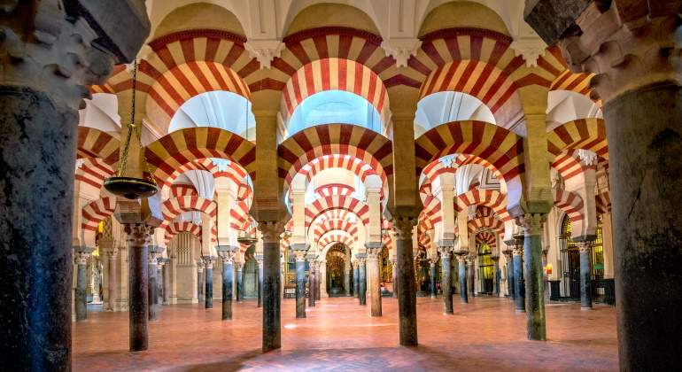

Sobre Córdoba

Córdoba es una ciudad con un ingente legado cultural y monumental. Su situación estratégica, cercana al
río Guadalquivir, antaño navegable, y la herencia de los distintos pueblos asentados en sus ricas
tierras, la han convertido en un lugar privilegiado.
La Unesco (Organización Cultural, Científica y Educacional de Naciones Unidas) reconoció en 1994 la
importancia universal de los bienes históricos cordobeses, ampliando el título de Patrimonio de la
Humanidad no sólo a la Mezquita-Catedral, sino también a todo el conjunto urbano que la rodea. Además,
en 2012, Córdoba recibió otro distintivo más: La Fiesta de Los Patios fue reconocida como Patrimonio
Cultural Inmaterial de la Humanidad. Por último, en julio de 2018, la Ciudad Califal de Medina Azahara
también ha recibido el título de Patrimonio de la Humanidad.
Por tanto, Córdoba cuenta con 4 inscripciones en la Lista del Patrimonio Mundial concedidas por la
Unesco: La Mezquita-Catedral (1984), el centro histórico que la rodea (1994), la Fiesta de Los Patios
(2012) y Medina Azahara (2018). Además, como el resto de España, disfruta del título de Patrimonio
Cultural Inmaterial de la Humanidad concedido también al Flamenco (2010) y a la Dieta Mediterránea
(2013).